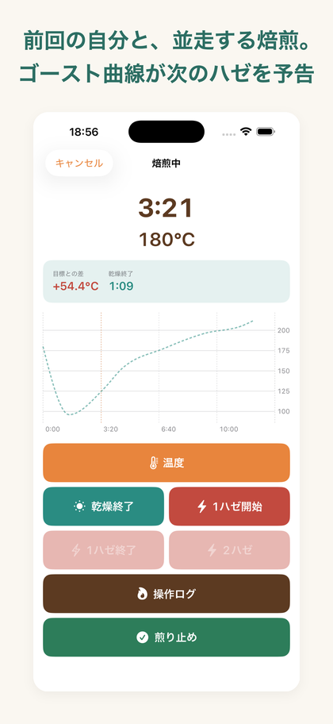
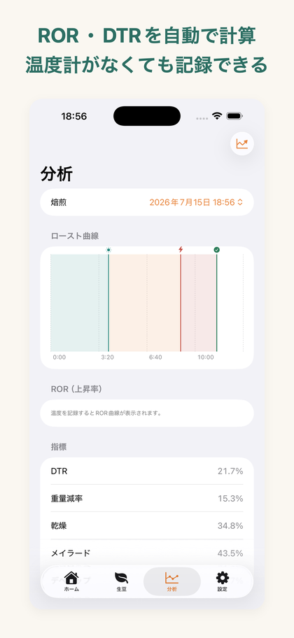
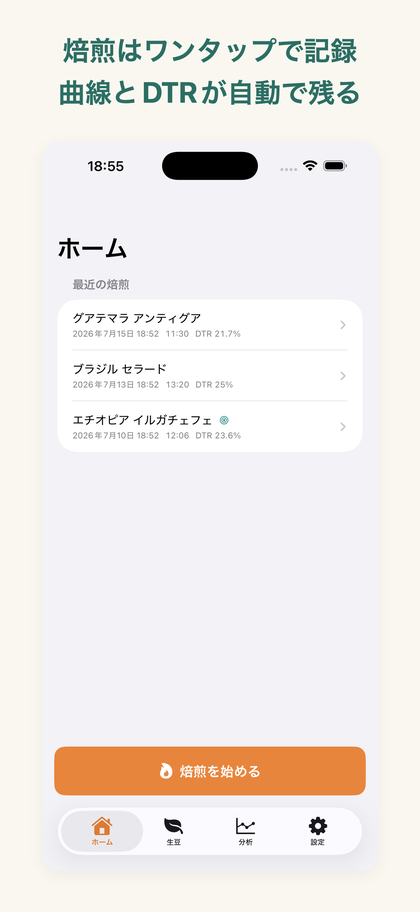

ハゼログは、手網・手鍋・小型焙煎機で焙煎する人のためのロースト曲線記録アプリです。
「うまく焼けた一回」を曲線ごと保存し、次回はその曲線と並走しながら再現を目指せます。



iPhone / iOS 17.0 以降・日本語 / English・完全オフライン
投入・温度・1ハゼ・2ハゼ・煎り止めを、64ptの大型ボタンでワンタップ。焙煎中は片手・グローブ・一瞥での操作を前提に設計しています。誤タップは5秒間取り消せます。
記録した時刻と温度が、そのまま時間×温度のロースト曲線に。乾燥／メイラード／デベロップのフェーズ帯とイベントマーカーが重なります。
温度の入力は任意です。1ハゼと煎り止めのタイミングだけでも、イベントの時系列とDTRが記録として成立します。
過去の焙煎を「目標プロファイル」に指定すると、焙煎中の画面に前回の曲線が薄く重なります。 いま目標より何度熱いのか、次のハゼまであと何分なのかが、焼きながら分かります。
ゴースト曲線・ROR/DTR分析・バッチ比較・CSV/PDF出力は、買い切りの「ハゼログ Pro」で解放できます。
| 機能 | 無料 | ハゼログ Pro |
|---|---|---|
| ライブ焙煎記録・曲線表示・保存 | 無制限 | ✓ |
| 火力・ダンパー操作ログ | ✓ | ✓ |
| 生豆マスタ | 3銘柄まで | 無制限 |
| ゴースト曲線（再現モード） | — | ✓ |
| ROR / DTR 分析 | — | ✓ |
| バッチ比較ビュー | — | ✓ |
| CSV / PDF エクスポート | — | ✓ |
ハゼログ Pro は買い切り（サブスクリプションではありません）。いつでも復元できます。
使えます。温度の入力は任意で、1ハゼや煎り止めのタイミングだけでもイベントの時系列とDTR（デベロップ時間比率）が記録・計算されます。
ありません。ハゼログは手動記録に特化しています。BLE温度プローブ連携は対象外で、手網・手鍋・小型焙煎機での焙煎を想定しています。
できます。設定で ℃ / ℉ を切り替えられます（記録は常に内部で統一して保存されるため、単位を変えても過去の記録と比較できます）。
すべて端末内にのみ保存されます。外部送信・データ収集・広告は一切ありません。アカウント登録も不要で、機内モードでも全機能が動作します。
いいえ。ハゼログ Pro は買い切り（¥1,000）です。一度購入すればずっと使えます。
Pro の CSV / PDF エクスポートで書き出せます。iCloud 同期は今後のバージョンで検討しています。